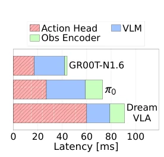
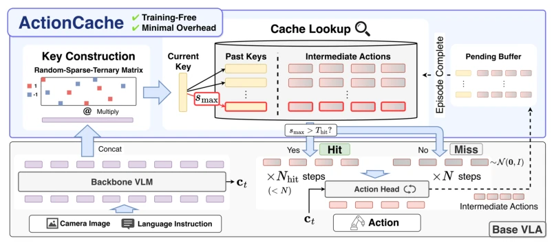
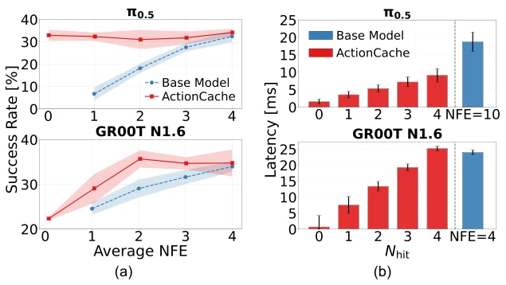
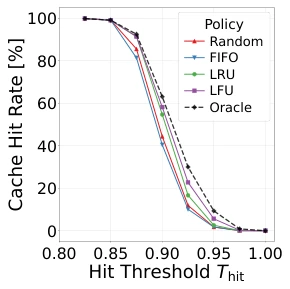
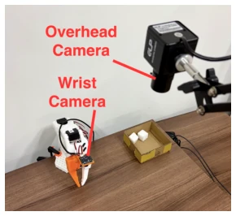

This paper equips VLA models with an "external cache", turning repetitive action generation into a lookup operation. It sounds like the old trick of trading space for time, but it is indeed effective on Flow Matching models. It transforms "denoising" into "retrieval", effectively adding a short-term memory bank to the robot's brain. However, it relies on the similarity of historical data and may fail when encountering entirely new tasks, and cache management strategies (such as LFU) only show advantages under resource constraints. Overall, it is a clever engineering optimization, but do not expect it to solve the model's inherent generalization problems; it mainly alleviates the pain point of inference latency. Although this "training-free" acceleration is tempting, it essentially exploits redundancy in the environment; if tasks change drastically, cache hit rates will plummet, and the fallback mechanism becomes a lifeline.
Flow Matching VLA (such as π0 [4], GR00T [3]) action heads iterate denoising too slowly, accounting for 37-66% of inference latency. Existing acceleration methods like EfficientVLA [31] can only prune, not skip entire denoising steps. Warm-start methods [14, 17] rely on training or only utilize short-term temporal continuity. This paper aims to accelerate without training, utilizing action reuse across tasks/episodes. Specifically, existing methods are mostly based on local temporal continuity, ignoring semantic similarity across episodes. ActionCache attempts to reconstruct warm-start as an output-level retrieval problem, rather than solely relying on temporal smoothing. This solves the problem that pre-trained models cannot be directly reused, avoiding the cost of retraining action heads.

Figure 1: Inference latency break- down for representative VLA models on NVIDIA RTX 4090 GPU. Action head accounts for 37- 66% of the end-to-end latency.
ActionCache is an external cache. VLM output embeddings generate Keys via sparse random projection [18]. The cache stores intermediate action blocks. During inference, look up the Key; if similarity is high, use cached actions for initialization (Few-step), otherwise fallback to full steps. Cache management uses LRU/LFU. Specific process: VLM generates condition ct, ActionCache extracts VLM output embeddings as Key, compressed via sparse random projection. Query cache; if similarity exceeds threshold Thit, use cached actions as initialization to reduce NFE; otherwise fallback to full step generation from Gaussian noise. Cache entries contain Key, action blocks, and metadata. Update strategy submits cache only when episode succeeds, discards on failure. Replacement strategies support LRU and LFU, the latter performs better under limited capacity.

Figure 2: Overview of ActionCache. ActionCache is an external cache that stores intermediate noisy actions from past generations. When a cache hit occurs, ActionCache initializes from retrieved past similar actions, thereby reducing the number of denoising steps.
Evaluated on VLABench [33] and real SO-101. Compared with Full and EfficientVLA [31]. π0.5 accelerated 11.75x, GR00T 34.43x. Cross-task reuse is effective. LFU is better than LRU. Specifically on VLABench, ActionCache maintains high success rates under low latency. In real-world experiments, hit rate is low in the grasping phase, but high in approach and placement phases. Cache size and threshold are adjustable, balancing accuracy and speed.

Figure 3: Success rate and latency trade-off for ActionCache and baselines. (a): ActionCache achieves higher success rates throughout all NFEs compared to the baselines. (b): As the Nhit decreases, the latency of the action head decreases proportionally with a negligible latency overhead.

Figure 6: Hit rate comparison for cache replacement policies un- der a restricted cache size of 100. LFU policy demonstrates the high- est hit rate across hit thresholds.

Figure 8: Real-world experimental environment. We use 6-DoF SO-101 robotic arm with an overhead and wrist-mounted camera, a box and a white cube.